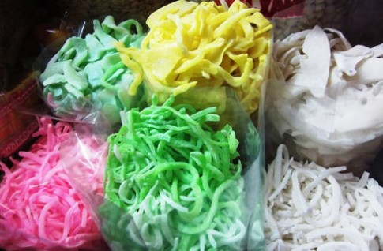

Ô mai, mứt màu sặc sỡ thường độc hại
Để đảm bảo an toàn, người tiêu dùng không nên chọn mứt, ô mai có màu sắc sặc sỡ, vì càng bắt mắt thì càng độc hại.
- Cục An toàn vệ sinh thực phẩm (Bộ Y tế) khuyến cáo, ngày Tết không nên chọn các loại ô mai, xí muội nhuộm phẩm màu là hàng trôi nổi, không rõ nguồn gốc, nhất là các
sản phẩm có màu sắc sặc sỡ, lạ mắt vì màu sắc đó là do người sản xuất sử dụng phụ gia như chất bảo quản, chất tạo ngọt, chất tẩy nấm mốc, chất tẩy trắng, sát trùng...
để phòng thối rữa, chống chảy nước, mốc, rất độc hại cho người ăn. Chỉ nên mua ô mai tại những cơ sở sản xuất uy tín, có nguồn gốc xuất xứ, thời hạn sử dụng, thành phần...
rõ ràng.
- Phó giáo sư Nguyễn Duy Thịnh (Viện Công nghệ sinh học và Công nghệ thực phẩm, ĐH Bách khoa Hà Nội) cũng khuyên các bà nội trợ nên tránh loại mứt, ô mai có màu sắc rực
rỡ vì dễ bị dùng phẩm màu công nghiệp, chứa nhiều kim loại nặng. Tuyệt đối không chọn mứt có màu sắc không nguyên gốc (như mứt bí nên chọn màu trắng, còn mứt bí các màu
thì không nên mua).

- PGS Nguyễn Duy Thịnh cho biết, nếu ăn phải ô mai, mứt kém chất lượng sẽ có thể bị rối loạn tiêu hóa, thậm chí ngộ độc thực phẩm, ảnh hưởng tới cơ quan nội tạng (gan, mật, thận).
- Ông cũng khuyên mọi người không nên ăn nhiều mứt, đặc biệt những người tiểu đường, béo phì, người già, trẻ em, phụ nữ mang thai, vì chúng chứa nhiều
đường. Người bình thường ăn nhiều mứt dễ sình bụng, mất cảm giác đói. Những loại mứt hoa quả, tuy giàu khoáng chất nhưng trong quá trình làm khô, rửa
sạch, xào… đã bị phân hủy, và dễ sinh nấm mốc. Một số loại rau củ quả thanh nhiệt, làm mát nhưng chế biến thành mứt sẽ có tác dụng ngược, gây nội nhiệt
hoặc phát sinh mụn nhọt do chất ngọt cao.
- Khi chọn mua mứt, nếu là mứt gừng, nên chọn loại mứt cay và thơm. Chọn mua loại mứt có lát gừng đẹp, không thẳng đều mà hơi cong, có màu hơi vàng (nếu
trắng là gừng đã “tẩy”). Nếu là mứt sen trần nên chọn loại mứt sen không vỡ hạt, không dính vào nhau, thơm hoa bưởi, màu trong và trắng ngà ngà.
- Với các loại mứt hoa quả khô, nên ngửi, sờ, nếm để phát hiện có ẩm mốc, chảy nước, mùi chua hay không. Khi mua về cần bảo quản ở nhiệt độ bình thường,
nên để trên bàn hay kệ tủ thoáng mát, tránh ánh nắng, không để gần bếp hoặc nơi có nguồn nhiệt, không để dưới đất, tránh bị ẩm ướt, tránh côn trùng xâm nhập.
- Nếu có thời gian bạn nên tự làm mứt, bởi vừa đảm bảo sạch sẽ, vừa hợp khẩu vị với những người trong gia đình.